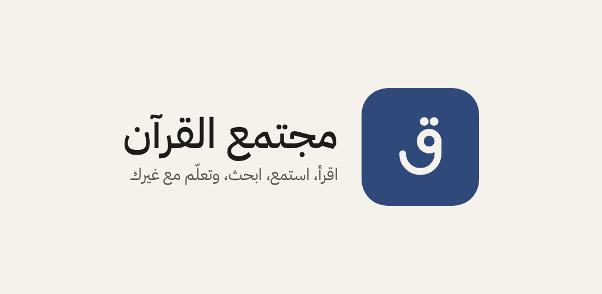

The app is now four tabs: الذكر، المجتمع، القرآن، الإعدادات. A small player sits above the tab bar on every tab for quick play and stop. Everything is checked against the old screens; nothing is added beyond what you asked for.
What changed in v7
A tab bar: الذكر (first), المجتمع، القرآن، الإعدادات.
الذكر: تلاوة اليوم with reminder and the week, the moon, تذكرة, and ادرس / الضياء / الفرقان.
المجتمع: discussion, lives, videos, and a direct line to the moderators. Open to all; sign-in only when acting.
القرآن: the Quran engine. Search shows how each word is written in the Mushaf.
الإعدادات holds the profile, the تلاوة settings and the reciter.
New: home-screen widgets, the notification player, the lock screen and notifications.
Identity: the mark ق (app icon, splash, notification icon, store). No logo inside the app.
My calls, easy to reverse
The Quran search box sits on الذكر and القرآن; المجتمع has its own search for posts; الإعدادات has none.
Reading a page is full-screen: the tab bar hides, the mini player stays.
تلاوة default: one hizb a day (the whole Quran in about 60 days). Week strip, no streaks or badges.
مجموعاتي lives in القرآن.
Real data on this board
Page 23 and hizb 3 (pages 22–31); hizb 4 starts at البقرة ٢٠٣.
«عباد»: 12 places, 11 written with alif, 1 with the small alif (الزخرف ١٩).
«يا ايها الذين امنوا»: 89 ayahs in 20 surahs.
Door counts and quoted words; today's moon.
Names, posts, lives, times are examples («بيانات مثال»).
Tab 1 · الذكر
Opens first. Daily reading, the moon, the reminder, and three sections.
When a search word is written in more than one way in the Mushaf, results show each form with its count. Real data: «عباد» = 12 places, 11 with alif (عِبَادُ), 1 with the small alif (عِبَٰدُ, الزخرف ١٩).
Each form has its own mark: the common form in blue; other forms in brown with a wavy underline and a label. Never colour alone.
Tap a form to show only its places. Works for any word: alif and small alif, رحمة / رحمت, الصلاة / الصلوٰة.
C7
٩:٤١●●●
يا ايها الذين امنوا
خيارات البحث
نوع البحث
عبارةكلمة كاملةجذرمطابق
عبارة: يتجاهل التشكيل والهمزات. مطابق: بالتشكيل كما كتبته.
أين
كل القرآنسورةجزءحزب
أظهر أشكال الكتابة
كلمات أخرى
مع أو بدون
إعادة ضبط
اعرض ٨٩ آية
Search options (deeper)
Options one level down: type (عبارة default, كلمة كاملة, جذر, مطابق), range, «أظهر أشكال الكتابة», and مع / أو / بدون.
The button shows the live count.
C8
٩:٤١●●●
مجموعاتي
الصبر
٤ آية ، آخر تغيير اليوم
الشكر
٣ آية ، آخر تغيير أمس
آيات أحفظها
١٢ آية ، آخر تغيير قبل أسبوع
محفوظاتي
١٨ آية ، آخر تغيير قبل شهر
تُحفظ على هذا الجهاز. تسجيل الدخول يحفظها في حسابك.
حُفظت في «الصبر»غيّر
البقرة ١٥٣١×
الذكر
المجتمع
القرآن
الإعدادات
بيانات مثال
مجموعاتي
Old Collections (v5): list, create, rename. «محفوظاتي» holds the old saved items.
«احفظ» opens the old add-to sheet with checkmarks; the toast confirms and lets you change.
Quick bar (4×1): tap the field → القرآن search with the keyboard open; play/pause the last recitation.
تلاوة (2×2): today's ring; tap → continue reading at the right page.
Moon (2×2): always dark, tonight's real phase; tap → Moon page.
تذكرة (4×2): a short full verse, changes daily; tap → the ayah.
المجتمع (4×2): next live and new answers; «اسأل» opens compose (sign-in if needed).
E2
٩:٤١●●●
ابحث في القرآن
تلاوة اليوم
الحزب ٣
الليلة
٠٪ مضيء
البث القادم ، ٨:٠٠ م
تدبّر سورة الكهف
٣ أجوبة جديدة على سؤالك
اسألالمجتمع
Widgets in dark mode
Widgets follow the phone's theme with the same tokens; the moon widget is always dark.
Sizes: Android 4×1, 2×2, 4×2 (Jetpack Glance). iOS: small = 2×2 widgets, medium = 4×2; the quick bar becomes an iOS lock-screen and Control Center button.
No logos or branding: the content is the widget.
E3
٩:٤١●●●
٩:٤١السبت
مجتمع القرآن
البقرة
١٥٣
البقرة ، الآية ١٥٣
مشاري العفاسي
١:٢٤٢:٣٨
١×
مجتمع القرآن ، الآن
تلاوة اليوم
بقي لك ٧ صفحات من الحزب ٣.
اقرأ الآنبعد ساعة
Notification player (Android)
The system media notification (MediaSession / Media3). Title «surah ، الآية n», subtitle the reciter, artwork = the surah name in the Quran font on paper. No logo.
Collapsed: previous ayah, play/pause, next ayah. Expanded: + repeat and speed as custom actions, and the progress of the current ayah.
Next/previous move by ayah. The notification disappears when playback stops.
E4
٩:٤١●●●
السبت ، الليلة ١٨ من الشهر
٩:٤١
مجتمع القرآن
البقرة
١٥٣
البقرة ، الآية ١٥٣
مشاري العفاسي
iOS: the same content in Now Playing
Lock screen
Android lock screen shows the collapsed media notification; iOS shows Now Playing (MPNowPlayingInfoCenter) with the same title, subtitle, artwork, and ayah skip.
Headphone and car buttons: next/previous = ayah.
E5
٩:٤١●●●
مجتمع القرآن ، ٥:٣٠ ص
تلاوة اليوم
الحزب ٤ ينتظرك ، ١٠ صفحات.
اقرأ الآنبعد ساعة
مجتمع القرآن ، قبل دقيقة
البث يبدأ بعد ١٥ دقيقة
تدبّر سورة الكهف ، مع الأستاذ محمد ، على تيك توك.
افتح في تيك توك
مجتمع القرآن ، قبل ساعة
جواب جديد على سؤالك
«ما الفرق بين الصبر هنا والصبر في آية ١٥٥؟» ، ردّ أحمد وأرفق آية.
اعرض
مجتمع القرآن ، أمس
ردّ المشرفين
على رسالتك: «هل يجوز نشر تأمّل بلا آية؟»
اقرأ الرد
Notifications
Four kinds, each its own channel, all off until the user turns them on in context (DECISIONS #29): تلاوة reminder, live reminder (only lives you set «ذكّرني» on), answers to your posts, moderator replies.
No preaching in notifications: facts and one action. At most one تلاوة reminder a day.
Identity
The mark ق, the app icon, splash, notification icon, store and icons.
G1
٩:٤١●●●
مجتمع القرآن
App icon on the home screen
The mark ق in paper on the accent blue. Short label: «مجتمع القرآن».
The phone decides the shape; the file has no rounded corners.
G2
٩:٤١●●●
مجتمع القرآن
Themed icon (Android 13+)
The monochrome layer: the system colours the mark to match the wallpaper.
Dark wallpapers keep the same mark.
G3
iOS: light ، dark ، tinted
مجتمع القرآن ، الآن ، تلاوة اليوم
Notification small icon (white mark)

Play Store feature graphic
Splash, iOS icons, notification icon, store
Splash: only the mark on the page colour, light and dark. No text, no animation.
iOS 18 icon variants: light, dark, tinted.
The wordmark «مجتمع القرآن» appears only in the stores and «عن التطبيق».
G4
الذكر
المجتمع
القرآن
الإعدادات
بحث
خيارات البحث
رجوع
افتح
تشغيل
إيقاف
السابقة
التالية
تكرار
احفظ
من هنا
شارك
انسخ
اسأل
استمع للكلمة
ذكّرني
بث
شارك آية
تأمّل
ادرس
الضياء
الفرقان
مجموعاتي
وقتي
معلومة
افتح خارجًا
تم
الموقع
جديد
اسحب
المزيد
فيديو
Icons
Lucide only, outline, stroke 1.75. The full list by place is in ICONS.md.
Back and chevrons mirror in RTL; media icons never do.
First launch
F1
٩:٤١●●●
مجتمع القرآن
اقرأ القرآن واستمع له وتعلّم منه مع غيرك.
١ من ٤
ابدأ
٩:٤١●●●
تخطَّ
بيانات الاستخدام
نجمع بيانات استخدام مجهولة لتحسين التطبيق، فقط إن وافقت. لا نبيعها ولا نشاركها.
٢ من ٤
لا، شكرًا
موافق
٩:٤١●●●
تخطَّ
موقعك للقمر
لحساب شروق القمر وغروبه. يُحسب على جهازك فقط.
٣ من ٤
استخدم موقعي
اختر مدينة
٩:٤١●●●
تخطَّ
عاديليليحسب الجهاز
كيف تحب القراءة؟
تغيّره متى شئت من الإعدادات.
٤ من ٤
تم
First launch (4 steps, as before)
Old Onboard1–4: welcome, consent (equal buttons), location or city, theme.
Consent wording is DECISIONS #23 (opt-in, equal buttons). Without location, moon times show «لا نعرف».
Skip is allowed on steps 2–4. Notifications are asked later, not here (DECISIONS #29).